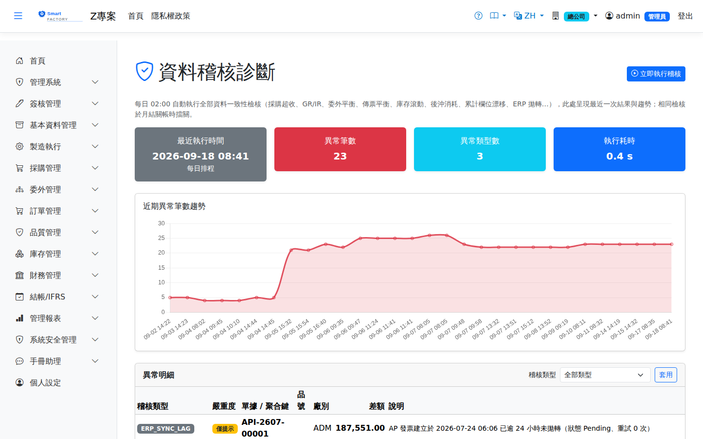

資料稽核診斷Data Audit Diagnostics
系統每天 02:00 自動執行全部資料一致性檢核（採購超收、GR/IR 溢開與掛帳、委外在外原料平衡、傳票借貸平衡與重複立帳、庫存滾動平衡、銷售超出貨、出貨未開票、後沖消耗核對、PO/SO 累計欄位漂移、ERP 拋轉滯留），並將結果保存於本畫面。相同的檢核在月結關帳時會擋關——本畫面讓異常在關帳之前就主動浮現，爭取處理時間。All data consistency checks run automatically at 02:00 every day (PO over-receipt, GR/IR over-invoicing and accruals, outsource material balance, journal debit/credit balance and duplicate postings, inventory roll-forward, sales over-shipment, shipments not invoiced, backflush consumption reconciliation, PO/SO cumulative field drift, ERP sync backlog) and the results are kept on this screen. The same checks block the month-end close — this screen brings the exceptions out before closing, so there is time to deal with them.

畫面內容Screen contents
可自動修正的累計欄位Cumulative fields that can be corrected automatically
有一類差異不必追查就知道正確答案：單據上的進度欄位，它的值完全由來源單據決定。目前有兩種——採購明細的已收數量（應為＝所有未作廢進貨單的收貨量加總）與訂單明細的已出數量（應為＝所有未作廢出貨單的出貨量加總）。出現這類差異時，畫面上方會多一張黃框卡片，列出每一筆的現值、應為與差額。One kind of difference has a known correct answer without any investigation: progress fields on documents whose value is fully determined by the source documents. There are two today — PO line received quantity (should be the total received on all non-void goods receipts) and SO line shipped quantity (should be the total shipped on all non-void shipments). When such differences exist, an amber card at the top of the screen lists each one with its current value, the value it should be and the difference.
傳票、庫存數量與成本的差異不會自動修正：那些錯了要先找出原因，直接把數字改對會把證據一起抹掉。進貨單指向不存在的採購明細（孤兒）也無法自動修正，仍列在下方的異常明細裡。Differences in journals, inventory quantities and cost are never corrected automatically: their cause has to be found first, and simply making the numbers agree would wipe out the evidence. Goods receipts pointing at a PO line that does not exist (orphans) cannot be corrected automatically either and stay in the findings below.
總帳存貨對明細帳Inventory GL vs subledger
其他庫存稽核只比數量；這一組比的是金額：總帳存貨科目（1401）必須等於庫存明細帳的價值（FIFO 成本層＋移動平均品的在手量 × 均價），扣掉下列三種「依設計不入總帳」的調整項後，殘差必須是 0。The other inventory checks compare quantities; this group compares amounts. The inventory GL account (1401) must equal the value of the inventory subledger (FIFO cost layers plus on-hand quantity × average cost for moving-average items). After removing the three adjustments below, which by design never reach the general ledger, the residual must be 0.
- 在製：生產與委外發料不開傳票，料發出去之後價值仍留在存貨科目，要等完工繳庫才回到明細帳。系統逐張工單計算（發料、退料、繳庫、委外收貨、完工吸收分錄）。Work in progress: production and outsourcing issues post no journal, so issued material stays in the inventory account until the finished goods are received back into stock. It is worked out per work order (issues, returns, completions, outsource receipts and the completion absorption entry).
- 客供料（CI／CR）：所有權屬客戶，只管數量不入總帳。Customer-supplied material (CI/CR): owned by the customer, so only the quantity is tracked.
- 借出在外（IL／LR）：所有權沒有移轉，只換了地點。Lent out (IL/LR): ownership does not change, only the location does.
| 稽核類型Audit type | 意思與處理Meaning and what to do |
|---|---|
| 總帳存貨與明細帳不符Inventory GL ≠ subledger | 扣掉調整項後仍有殘差：有異動漏開傳票，或傳票金額與異動不同。擋月結關帳。先看同廠的「單據總帳與異動價值不符」找出是哪幾張單；查明原因後以人工傳票更正，殘差歸零即解除。A residual remains after the adjustments: some movement was posted without a journal, or with a different amount. Blocks the month-end close. Use the "Document GL ≠ movement value" findings for the same plant to find the documents; once the cause is known, correct it with a manual journal — the finding clears when the residual is 0. |
| 單據總帳與異動價值不符Document GL ≠ movement value | 指路用的明細，只在殘差不為 0 時列出：這張單的存貨科目淨額與它的庫存異動價值不相等，又不屬於上述調整項。不擋關帳（擋的是殘差那一筆）。Listed only while there is a residual, to show where it comes from: this document's inventory GL amount differs from the value of its stock movements and is not one of the adjustments above. Does not block the close on its own (the residual does). |
| 工單在製為負Negative work-order WIP | 回到倉庫的價值比發出去的多，例如退料超過廠內實際發料，或委外收回的加工費沒有入帳。擋關帳。More value came back to stock than was issued — for example a return larger than what was actually issued in-plant, or an outsource receipt whose processing fee was never posted. Blocks the close. |
| 結案工單仍留在製WIP left on closed work order | 工單已結案或作廢，但發出去的料既沒有算進成品、也沒有退回倉庫。擋關帳。The work order is closed or voided, yet the issued material was neither costed into the finished goods nor returned to stock. Blocks the close. |
早於總帳過帳功能上線就存在的庫存異動沒有傳票，會一直出現在殘差裡；這類歷史差額同樣以一張人工傳票（借或貸存貨科目、對方為適當的調整科目）一次更正。Stock movements recorded before journal posting existed have no journals and will keep showing up in the residual; correct such historical differences the same way, with one manual journal debiting or crediting the inventory account against a suitable adjustment account.
注意事項Points to note
畫面僅顯示目前廠別（及無廠別維度）的異常；異常筆數為 0 不代表全公司無異常。稽核結果保留 90 天，逾期自動清除。月結關帳前請先確認本畫面無異常，否則關帳會被相同檢核擋下。The screen only shows exceptions for your current plant (plus those with no plant dimension), so 0 exceptions does not mean the whole company is clean. Audit results are kept for 90 days and then cleared automatically. Make sure this screen is clear before the month-end close, or the same checks will block it.
欄位說明Field reference
查詢條件Query criteria
| 條件Condition | 說明Guide |
|---|---|
| 稽核類型Audit Type | 要執行的一致性稽核項目；留空為全部項目一次掃描The consistency check to run; leave blank to scan every check in one pass |
結果欄位Result fields
| 欄位Field | 說明Guide |
|---|---|
| 稽核類型Audit Type | 偵測到問題的稽核項目名稱Name of the audit check that found the problem |
| 單據 / 聚合鍵Document / Key | 問題所在的單據號碼或彙總鍵，用於定位資料The document number or summary key where the problem is, for locating the data |
| 品號Item | 涉及的料件（部分稽核項目適用）Item involved (applies to some audit checks) |
| 廠別Plant | 問題所屬的廠別Plant the problem belongs to |
| 差額Difference | 兩個口徑之間的不一致金額或數量；為 0 表示一致The amount or quantity by which the two bases disagree; 0 means they agree |
| 說明Guide | 差異的具體描述與建議處理方向Description of the difference and the suggested way to handle it |
稽核本身只偵測與呈報差異；除了上面「可自動修正的累計欄位」經人勾選核可之外，不會修改資料。差額落在容忍值內者不列入結果。The audit itself only detects and reports differences; apart from the "cumulative fields" above, corrected only when someone ticks and approves them, it never changes data. Anything within the tolerance is left out of the results.